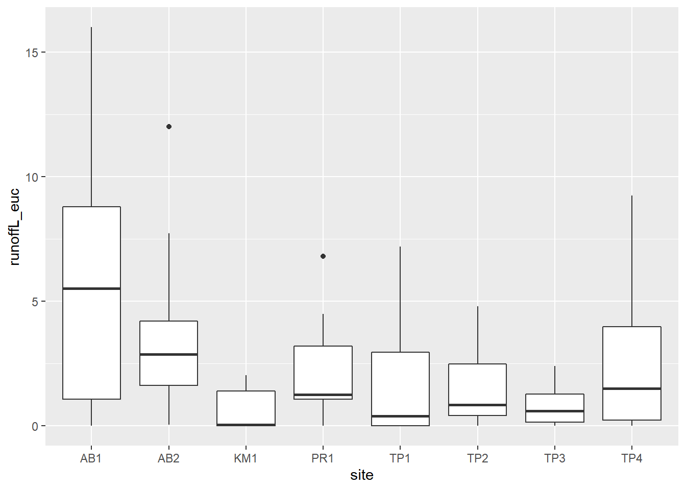

<!DOCTYPE html>
<html lang="" xml:lang="">
<head>

  <meta charset="utf-8" />
  <meta http-equiv="X-UA-Compatible" content="IE=edge" />
  <title>3 Data Abstraction | EnvDataSci.utf8</title>
  <meta name="description" content="" />
  <meta name="generator" content="bookdown 0.21 and GitBook 2.6.7" />

  <meta property="og:title" content="3 Data Abstraction | EnvDataSci.utf8" />
  <meta property="og:type" content="book" />
  
  
  
  

  <meta name="twitter:card" content="summary" />
  <meta name="twitter:title" content="3 Data Abstraction | EnvDataSci.utf8" />
  
  
  


  <meta name="viewport" content="width=device-width, initial-scale=1" />
  <meta name="apple-mobile-web-app-capable" content="yes" />
  <meta name="apple-mobile-web-app-status-bar-style" content="black" />
  
  
<link rel="prev" href="introduction-to-r.html"/>
<link rel="next" href="visualization.html"/>
<script src="libs/header-attrs-2.5/header-attrs.js"></script>
<script src="libs/jquery-2.2.3/jquery.min.js"></script>
<link href="libs/gitbook-2.6.7/css/style.css" rel="stylesheet" />
<link href="libs/gitbook-2.6.7/css/plugin-table.css" rel="stylesheet" />
<link href="libs/gitbook-2.6.7/css/plugin-bookdown.css" rel="stylesheet" />
<link href="libs/gitbook-2.6.7/css/plugin-highlight.css" rel="stylesheet" />
<link href="libs/gitbook-2.6.7/css/plugin-search.css" rel="stylesheet" />
<link href="libs/gitbook-2.6.7/css/plugin-fontsettings.css" rel="stylesheet" />
<link href="libs/gitbook-2.6.7/css/plugin-clipboard.css" rel="stylesheet" />


<link href="libs/anchor-sections-1.0/anchor-sections.css" rel="stylesheet" />
<script src="libs/anchor-sections-1.0/anchor-sections.js"></script>
<script src="libs/htmlwidgets-1.5.2/htmlwidgets.js"></script>
<link href="libs/leaflet-1.3.1/leaflet.css" rel="stylesheet" />
<script src="libs/leaflet-1.3.1/leaflet.js"></script>
<link href="libs/leafletfix-1.0.0/leafletfix.css" rel="stylesheet" />
<script src="libs/Proj4Leaflet-1.0.1/proj4-compressed.js"></script>
<script src="libs/Proj4Leaflet-1.0.1/proj4leaflet.js"></script>
<link href="libs/rstudio_leaflet-1.3.1/rstudio_leaflet.css" rel="stylesheet" />
<script src="libs/leaflet-binding-2.0.3/leaflet.js"></script>
<script src="libs/leaflet-providers-1.9.0/leaflet-providers_1.9.0.js"></script>
<script src="libs/leaflet-providers-plugin-2.0.3/leaflet-providers-plugin.js"></script>


<style type="text/css">
pre > code.sourceCode { white-space: pre; position: relative; }
pre > code.sourceCode > span { display: inline-block; line-height: 1.25; }
pre > code.sourceCode > span:empty { height: 1.2em; }
.sourceCode { overflow: visible; }
code.sourceCode > span { color: inherit; text-decoration: inherit; }
pre.sourceCode { margin: 0; }
@media screen {
div.sourceCode { overflow: auto; }
}
@media print {
pre > code.sourceCode { white-space: pre-wrap; }
pre > code.sourceCode > span { text-indent: -5em; padding-left: 5em; }
}
pre.numberSource code
  { counter-reset: source-line 0; }
pre.numberSource code > span
  { position: relative; left: -4em; counter-increment: source-line; }
pre.numberSource code > span > a:first-child::before
  { content: counter(source-line);
    position: relative; left: -1em; text-align: right; vertical-align: baseline;
    border: none; display: inline-block;
    -webkit-touch-callout: none; -webkit-user-select: none;
    -khtml-user-select: none; -moz-user-select: none;
    -ms-user-select: none; user-select: none;
    padding: 0 4px; width: 4em;
    color: #aaaaaa;
  }
pre.numberSource { margin-left: 3em; border-left: 1px solid #aaaaaa;  padding-left: 4px; }
div.sourceCode
  {   }
@media screen {
pre > code.sourceCode > span > a:first-child::before { text-decoration: underline; }
}
code span.al { color: #ff0000; font-weight: bold; } /* Alert */
code span.an { color: #60a0b0; font-weight: bold; font-style: italic; } /* Annotation */
code span.at { color: #7d9029; } /* Attribute */
code span.bn { color: #40a070; } /* BaseN */
code span.bu { } /* BuiltIn */
code span.cf { color: #007020; font-weight: bold; } /* ControlFlow */
code span.ch { color: #4070a0; } /* Char */
code span.cn { color: #880000; } /* Constant */
code span.co { color: #60a0b0; font-style: italic; } /* Comment */
code span.cv { color: #60a0b0; font-weight: bold; font-style: italic; } /* CommentVar */
code span.do { color: #ba2121; font-style: italic; } /* Documentation */
code span.dt { color: #902000; } /* DataType */
code span.dv { color: #40a070; } /* DecVal */
code span.er { color: #ff0000; font-weight: bold; } /* Error */
code span.ex { } /* Extension */
code span.fl { color: #40a070; } /* Float */
code span.fu { color: #06287e; } /* Function */
code span.im { } /* Import */
code span.in { color: #60a0b0; font-weight: bold; font-style: italic; } /* Information */
code span.kw { color: #007020; font-weight: bold; } /* Keyword */
code span.op { color: #666666; } /* Operator */
code span.ot { color: #007020; } /* Other */
code span.pp { color: #bc7a00; } /* Preprocessor */
code span.sc { color: #4070a0; } /* SpecialChar */
code span.ss { color: #bb6688; } /* SpecialString */
code span.st { color: #4070a0; } /* String */
code span.va { color: #19177c; } /* Variable */
code span.vs { color: #4070a0; } /* VerbatimString */
code span.wa { color: #60a0b0; font-weight: bold; font-style: italic; } /* Warning */
</style>

<link rel="stylesheet" href="style.css" type="text/css" />
</head>

<body>


  <div class="book without-animation with-summary font-size-2 font-family-1" data-basepath=".">

    <div class="book-summary">
      <nav role="navigation">

<ul class="summary">
<li><a href="./">Environmental Data Science</a></li>

<li class="divider"></li>
<li class="chapter" data-level="1" data-path="index.html"><a href="index.html"><i class="fa fa-check"></i><b>1</b> Prerequisites</a>
<ul>
<li class="chapter" data-level="1.1" data-path="index.html"><a href="index.html#packages-to-install"><i class="fa fa-check"></i><b>1.1</b> Packages to install</a></li>
<li class="chapter" data-level="1.2" data-path="index.html"><a href="index.html#data"><i class="fa fa-check"></i><b>1.2</b> Data</a></li>
</ul></li>
<li class="chapter" data-level="2" data-path="introduction-to-r.html"><a href="introduction-to-r.html"><i class="fa fa-check"></i><b>2</b> Introduction to R</a>
<ul>
<li class="chapter" data-level="2.1" data-path="introduction-to-r.html"><a href="introduction-to-r.html#variables"><i class="fa fa-check"></i><b>2.1</b> Variables</a></li>
<li class="chapter" data-level="2.2" data-path="introduction-to-r.html"><a href="introduction-to-r.html#functions"><i class="fa fa-check"></i><b>2.2</b> Functions</a></li>
<li class="chapter" data-level="2.3" data-path="introduction-to-r.html"><a href="introduction-to-r.html#expressions-and-statements"><i class="fa fa-check"></i><b>2.3</b> Expressions and Statements</a></li>
<li class="chapter" data-level="2.4" data-path="introduction-to-r.html"><a href="introduction-to-r.html#data-types"><i class="fa fa-check"></i><b>2.4</b> Data Types</a>
<ul>
<li class="chapter" data-level="2.4.1" data-path="introduction-to-r.html"><a href="introduction-to-r.html#integers"><i class="fa fa-check"></i><b>2.4.1</b> Integers</a></li>
</ul></li>
<li class="chapter" data-level="2.5" data-path="introduction-to-r.html"><a href="introduction-to-r.html#rectangular-data"><i class="fa fa-check"></i><b>2.5</b> Rectangular data</a></li>
<li class="chapter" data-level="2.6" data-path="introduction-to-r.html"><a href="introduction-to-r.html#data-structures-in-r"><i class="fa fa-check"></i><b>2.6</b> Data Structures in R</a>
<ul>
<li class="chapter" data-level="2.6.1" data-path="introduction-to-r.html"><a href="introduction-to-r.html#vectors"><i class="fa fa-check"></i><b>2.6.1</b> Vectors</a></li>
<li class="chapter" data-level="2.6.2" data-path="introduction-to-r.html"><a href="introduction-to-r.html#lists"><i class="fa fa-check"></i><b>2.6.2</b> Lists</a></li>
<li class="chapter" data-level="2.6.3" data-path="introduction-to-r.html"><a href="introduction-to-r.html#matrices"><i class="fa fa-check"></i><b>2.6.3</b> Matrices</a></li>
<li class="chapter" data-level="2.6.4" data-path="introduction-to-r.html"><a href="introduction-to-r.html#data-frames"><i class="fa fa-check"></i><b>2.6.4</b> Data frames</a></li>
<li class="chapter" data-level="2.6.5" data-path="introduction-to-r.html"><a href="introduction-to-r.html#factors"><i class="fa fa-check"></i><b>2.6.5</b> Factors</a></li>
</ul></li>
<li class="chapter" data-level="2.7" data-path="introduction-to-r.html"><a href="introduction-to-r.html#programming-scripts-in-rstudio"><i class="fa fa-check"></i><b>2.7</b> Programming scripts in RStudio</a>
<ul>
<li class="chapter" data-level="2.7.1" data-path="introduction-to-r.html"><a href="introduction-to-r.html#subsetting-with-logic"><i class="fa fa-check"></i><b>2.7.1</b> Subsetting with logic</a></li>
<li class="chapter" data-level="2.7.2" data-path="introduction-to-r.html"><a href="introduction-to-r.html#apply-functions"><i class="fa fa-check"></i><b>2.7.2</b> Apply functions</a></li>
</ul></li>
<li class="chapter" data-level="2.8" data-path="introduction-to-r.html"><a href="introduction-to-r.html#exercises"><i class="fa fa-check"></i><b>2.8</b> Exercises</a></li>
</ul></li>
<li class="chapter" data-level="3" data-path="data-abstraction.html"><a href="data-abstraction.html"><i class="fa fa-check"></i><b>3</b> Data Abstraction</a>
<ul>
<li class="chapter" data-level="3.1" data-path="data-abstraction.html"><a href="data-abstraction.html#background-exploratory-data-analysis"><i class="fa fa-check"></i><b>3.1</b> Background: Exploratory Data Analysis</a></li>
<li class="chapter" data-level="3.2" data-path="data-abstraction.html"><a href="data-abstraction.html#the-tidyverse-and-what-well-explore-in-this-chapter"><i class="fa fa-check"></i><b>3.2</b> The Tidyverse and what we’ll explore in this chapter</a></li>
<li class="chapter" data-level="3.3" data-path="data-abstraction.html"><a href="data-abstraction.html#tibbles"><i class="fa fa-check"></i><b>3.3</b> Tibbles</a>
<ul>
<li class="chapter" data-level="3.3.1" data-path="data-abstraction.html"><a href="data-abstraction.html#read_csv-vs.-read.csv"><i class="fa fa-check"></i><b>3.3.1</b> <code>read_csv</code> vs. <code>read.csv</code></a></li>
</ul></li>
<li class="chapter" data-level="3.4" data-path="data-abstraction.html"><a href="data-abstraction.html#statistical-summary-of-variables"><i class="fa fa-check"></i><b>3.4</b> Statistical summary of variables</a></li>
<li class="chapter" data-level="3.5" data-path="data-abstraction.html"><a href="data-abstraction.html#visualizing-data-with-a-tukey-box-plot"><i class="fa fa-check"></i><b>3.5</b> Visualizing data with a Tukey box plot</a></li>
<li class="chapter" data-level="3.6" data-path="data-abstraction.html"><a href="data-abstraction.html#database-operations-with-dplyr"><i class="fa fa-check"></i><b>3.6</b> Database operations with <code>dplyr</code></a>
<ul>
<li class="chapter" data-level="3.6.1" data-path="data-abstraction.html"><a href="data-abstraction.html#select-mutate-and-the-pipe"><i class="fa fa-check"></i><b>3.6.1</b> Select, mutate, and the pipe</a></li>
<li class="chapter" data-level="3.6.2" data-path="data-abstraction.html"><a href="data-abstraction.html#filter"><i class="fa fa-check"></i><b>3.6.2</b> filter</a></li>
<li class="chapter" data-level="3.6.3" data-path="data-abstraction.html"><a href="data-abstraction.html#writing-a-data-frame-to-a-csv"><i class="fa fa-check"></i><b>3.6.3</b> Writing a data frame to a csv</a></li>
<li class="chapter" data-level="3.6.4" data-path="data-abstraction.html"><a href="data-abstraction.html#summarize-by-group"><i class="fa fa-check"></i><b>3.6.4</b> Summarize by group</a></li>
<li class="chapter" data-level="3.6.5" data-path="data-abstraction.html"><a href="data-abstraction.html#count"><i class="fa fa-check"></i><b>3.6.5</b> Count</a></li>
<li class="chapter" data-level="3.6.6" data-path="data-abstraction.html"><a href="data-abstraction.html#sorting-after-summarizing"><i class="fa fa-check"></i><b>3.6.6</b> Sorting after summarizing</a></li>
</ul></li>
<li class="chapter" data-level="3.7" data-path="data-abstraction.html"><a href="data-abstraction.html#the-dot-operator"><i class="fa fa-check"></i><b>3.7</b> The dot operator</a></li>
<li class="chapter" data-level="3.8" data-path="data-abstraction.html"><a href="data-abstraction.html#exercises-1"><i class="fa fa-check"></i><b>3.8</b> Exercises</a></li>
<li class="chapter" data-level="3.9" data-path="data-abstraction.html"><a href="data-abstraction.html#string-abstraction"><i class="fa fa-check"></i><b>3.9</b> String Abstraction</a>
<ul>
<li class="chapter" data-level="3.9.1" data-path="data-abstraction.html"><a href="data-abstraction.html#detecting-matches"><i class="fa fa-check"></i><b>3.9.1</b> Detecting matches</a></li>
<li class="chapter" data-level="3.9.2" data-path="data-abstraction.html"><a href="data-abstraction.html#subsetting-strings"><i class="fa fa-check"></i><b>3.9.2</b> Subsetting Strings</a></li>
<li class="chapter" data-level="3.9.3" data-path="data-abstraction.html"><a href="data-abstraction.html#string-length"><i class="fa fa-check"></i><b>3.9.3</b> String Length</a></li>
<li class="chapter" data-level="3.9.4" data-path="data-abstraction.html"><a href="data-abstraction.html#replacing-substrings-with-other-text-mutating-strings"><i class="fa fa-check"></i><b>3.9.4</b> Replacing substrings with other text (“mutating” strings)</a></li>
<li class="chapter" data-level="3.9.5" data-path="data-abstraction.html"><a href="data-abstraction.html#concatenating-and-splitting"><i class="fa fa-check"></i><b>3.9.5</b> Concatenating and splitting</a></li>
</ul></li>
<li class="chapter" data-level="3.10" data-path="data-abstraction.html"><a href="data-abstraction.html#dates-and-times-with-lubridate"><i class="fa fa-check"></i><b>3.10</b> Dates and times with <code>lubridate</code></a></li>
</ul></li>
<li class="chapter" data-level="4" data-path="visualization.html"><a href="visualization.html"><i class="fa fa-check"></i><b>4</b> Visualization</a>
<ul>
<li class="chapter" data-level="4.1" data-path="visualization.html"><a href="visualization.html#ggplot2"><i class="fa fa-check"></i><b>4.1</b> ggplot2</a></li>
<li class="chapter" data-level="4.2" data-path="visualization.html"><a href="visualization.html#plotting-one-variable"><i class="fa fa-check"></i><b>4.2</b> Plotting one variable</a>
<ul>
<li class="chapter" data-level="4.2.1" data-path="visualization.html"><a href="visualization.html#histogram"><i class="fa fa-check"></i><b>4.2.1</b> Histogram</a></li>
<li class="chapter" data-level="4.2.2" data-path="visualization.html"><a href="visualization.html#density-plot"><i class="fa fa-check"></i><b>4.2.2</b> Density Plot</a></li>
<li class="chapter" data-level="4.2.3" data-path="visualization.html"><a href="visualization.html#boxplot"><i class="fa fa-check"></i><b>4.2.3</b> boxplot</a></li>
</ul></li>
<li class="chapter" data-level="4.3" data-path="visualization.html"><a href="visualization.html#plotting-two-variables"><i class="fa fa-check"></i><b>4.3</b> Plotting two variables</a>
<ul>
<li class="chapter" data-level="4.3.1" data-path="visualization.html"><a href="visualization.html#two-continuous-variables"><i class="fa fa-check"></i><b>4.3.1</b> Two continuous variables</a></li>
<li class="chapter" data-level="4.3.2" data-path="visualization.html"><a href="visualization.html#two-variables-one-discrete-eucoak"><i class="fa fa-check"></i><b>4.3.2</b> Two variables, one discrete [<code>eucoak</code>]</a></li>
</ul></li>
<li class="chapter" data-level="4.4" data-path="visualization.html"><a href="visualization.html#color-systems"><i class="fa fa-check"></i><b>4.4</b> Color systems</a>
<ul>
<li class="chapter" data-level="4.4.1" data-path="visualization.html"><a href="visualization.html#color-from-variable-in-aesthetics"><i class="fa fa-check"></i><b>4.4.1</b> Color from variable, in aesthetics</a></li>
<li class="chapter" data-level="4.4.2" data-path="visualization.html"><a href="visualization.html#trend-line-sierra"><i class="fa fa-check"></i><b>4.4.2</b> Trend line [<code>sierra</code>]</a></li>
<li class="chapter" data-level="4.4.3" data-path="visualization.html"><a href="visualization.html#general-symbology"><i class="fa fa-check"></i><b>4.4.3</b> General symbology</a></li>
</ul></li>
<li class="chapter" data-level="4.5" data-path="visualization.html"><a href="visualization.html#titles-and-subtitles"><i class="fa fa-check"></i><b>4.5</b> Titles and subtitles</a></li>
<li class="chapter" data-level="4.6" data-path="visualization.html"><a href="visualization.html#pairs-plot-sierra"><i class="fa fa-check"></i><b>4.6</b> Pairs Plot [<code>sierra</code>]</a></li>
<li class="chapter" data-level="4.7" data-path="visualization.html"><a href="visualization.html#exercises-2"><i class="fa fa-check"></i><b>4.7</b> Exercises</a></li>
</ul></li>
<li class="chapter" data-level="5" data-path="data-transformation.html"><a href="data-transformation.html"><i class="fa fa-check"></i><b>5</b> Data Transformation</a>
<ul>
<li class="chapter" data-level="5.1" data-path="data-transformation.html"><a href="data-transformation.html#data-joins"><i class="fa fa-check"></i><b>5.1</b> Data joins</a></li>
<li class="chapter" data-level="5.2" data-path="data-transformation.html"><a href="data-transformation.html#set-operations"><i class="fa fa-check"></i><b>5.2</b> Set Operations</a></li>
<li class="chapter" data-level="5.3" data-path="data-transformation.html"><a href="data-transformation.html#binding-rows-and-columns"><i class="fa fa-check"></i><b>5.3</b> Binding Rows and Columns</a></li>
<li class="chapter" data-level="5.4" data-path="data-transformation.html"><a href="data-transformation.html#pivotting-data-frames"><i class="fa fa-check"></i><b>5.4</b> Pivotting data frames</a></li>
</ul></li>
<li class="chapter" data-level="6" data-path="spatial-data-and-maps.html"><a href="spatial-data-and-maps.html"><i class="fa fa-check"></i><b>6</b> Spatial Data and Maps</a>
<ul>
<li class="chapter" data-level="6.1" data-path="spatial-data-and-maps.html"><a href="spatial-data-and-maps.html#spatial-data"><i class="fa fa-check"></i><b>6.1</b> Spatial Data</a>
<ul>
<li class="chapter" data-level="6.1.1" data-path="spatial-data-and-maps.html"><a href="spatial-data-and-maps.html#examples-of-simple-geometry-building-in-sf"><i class="fa fa-check"></i><b>6.1.1</b> Examples of simple geometry building in sf</a></li>
<li class="chapter" data-level="6.1.2" data-path="spatial-data-and-maps.html"><a href="spatial-data-and-maps.html#building-a-mappable-sfc-from-scratch"><i class="fa fa-check"></i><b>6.1.2</b> Building a mappable sfc from scratch</a></li>
<li class="chapter" data-level="6.1.3" data-path="spatial-data-and-maps.html"><a href="spatial-data-and-maps.html#creating-features-from-shapefiles-or-tables"><i class="fa fa-check"></i><b>6.1.3</b> Creating features from shapefiles or tables</a></li>
<li class="chapter" data-level="6.1.4" data-path="spatial-data-and-maps.html"><a href="spatial-data-and-maps.html#coordinate-referencing-system"><i class="fa fa-check"></i><b>6.1.4</b> Coordinate Referencing System</a></li>
<li class="chapter" data-level="6.1.5" data-path="spatial-data-and-maps.html"><a href="spatial-data-and-maps.html#spatial-join-st_join"><i class="fa fa-check"></i><b>6.1.5</b> Spatial join <code>st_join</code></a></li>
<li class="chapter" data-level="6.1.6" data-path="spatial-data-and-maps.html"><a href="spatial-data-and-maps.html#plotting-maps-in-the-base-plot-system"><i class="fa fa-check"></i><b>6.1.6</b> Plotting maps in the base plot system</a></li>
</ul></li>
<li class="chapter" data-level="6.2" data-path="spatial-data-and-maps.html"><a href="spatial-data-and-maps.html#raster-gis-in-r"><i class="fa fa-check"></i><b>6.2</b> Raster GIS in R</a>
<ul>
<li class="chapter" data-level="6.2.1" data-path="spatial-data-and-maps.html"><a href="spatial-data-and-maps.html#raster-from-scratch"><i class="fa fa-check"></i><b>6.2.1</b> Raster from scratch</a></li>
</ul></li>
<li class="chapter" data-level="6.3" data-path="spatial-data-and-maps.html"><a href="spatial-data-and-maps.html#ggplot2-for-maps"><i class="fa fa-check"></i><b>6.3</b> ggplot2 for maps</a>
<ul>
<li class="chapter" data-level="6.3.1" data-path="spatial-data-and-maps.html"><a href="spatial-data-and-maps.html#rasters-in-ggplot2"><i class="fa fa-check"></i><b>6.3.1</b> Rasters in ggplot2</a></li>
</ul></li>
<li class="chapter" data-level="6.4" data-path="spatial-data-and-maps.html"><a href="spatial-data-and-maps.html#tmap"><i class="fa fa-check"></i><b>6.4</b> tmap</a>
<ul>
<li class="chapter" data-level="6.4.1" data-path="spatial-data-and-maps.html"><a href="spatial-data-and-maps.html#interactive-maps"><i class="fa fa-check"></i><b>6.4.1</b> Interactive Maps</a></li>
</ul></li>
<li class="chapter" data-level="6.5" data-path="spatial-data-and-maps.html"><a href="spatial-data-and-maps.html#exercises-3"><i class="fa fa-check"></i><b>6.5</b> Exercises</a></li>
</ul></li>
<li class="chapter" data-level="7" data-path="statistics-and-modeling.html"><a href="statistics-and-modeling.html"><i class="fa fa-check"></i><b>7</b> Statistics and Modeling</a>
<ul>
<li class="chapter" data-level="7.1" data-path="statistics-and-modeling.html"><a href="statistics-and-modeling.html#goals-of-statistical-analysis"><i class="fa fa-check"></i><b>7.1</b> Goals of statistical analysis</a></li>
<li class="chapter" data-level="7.2" data-path="statistics-and-modeling.html"><a href="statistics-and-modeling.html#summary-statistics"><i class="fa fa-check"></i><b>7.2</b> Summary Statistics</a>
<ul>
<li class="chapter" data-level="7.2.1" data-path="statistics-and-modeling.html"><a href="statistics-and-modeling.html#summarize-by-group-stratifying-a-summary"><i class="fa fa-check"></i><b>7.2.1</b> Summarize by group: <em>stratifying a summary</em></a></li>
<li class="chapter" data-level="7.2.2" data-path="statistics-and-modeling.html"><a href="statistics-and-modeling.html#boxplot-for-visualizing-distributions-by-group"><i class="fa fa-check"></i><b>7.2.2</b> Boxplot for visualizing distributions by group</a></li>
<li class="chapter" data-level="7.2.3" data-path="statistics-and-modeling.html"><a href="statistics-and-modeling.html#generating-pseudorandom-numbers"><i class="fa fa-check"></i><b>7.2.3</b> Generating pseudorandom numbers</a></li>
</ul></li>
<li class="chapter" data-level="7.3" data-path="statistics-and-modeling.html"><a href="statistics-and-modeling.html#statistical-tests"><i class="fa fa-check"></i><b>7.3</b> Statistical tests</a>
<ul>
<li class="chapter" data-level="7.3.1" data-path="statistics-and-modeling.html"><a href="statistics-and-modeling.html#comparing-samples-and-groupings"><i class="fa fa-check"></i><b>7.3.1</b> Comparing samples and groupings</a></li>
<li class="chapter" data-level="7.3.2" data-path="statistics-and-modeling.html"><a href="statistics-and-modeling.html#correlation"><i class="fa fa-check"></i><b>7.3.2</b> Correlation</a></li>
</ul></li>
<li class="chapter" data-level="7.4" data-path="statistics-and-modeling.html"><a href="statistics-and-modeling.html#modeling-in-r"><i class="fa fa-check"></i><b>7.4</b> Modeling in R</a>
<ul>
<li class="chapter" data-level="7.4.1" data-path="statistics-and-modeling.html"><a href="statistics-and-modeling.html#analysis-of-covariance"><i class="fa fa-check"></i><b>7.4.1</b> Analysis of Covariance</a></li>
<li class="chapter" data-level="7.4.2" data-path="statistics-and-modeling.html"><a href="statistics-and-modeling.html#generalized-linear-model-glm"><i class="fa fa-check"></i><b>7.4.2</b> Generalized Linear Model (GLM)</a></li>
</ul></li>
<li class="chapter" data-level="7.5" data-path="statistics-and-modeling.html"><a href="statistics-and-modeling.html#spatial-statistical-analysis"><i class="fa fa-check"></i><b>7.5</b> Spatial Statistical Analysis</a>
<ul>
<li class="chapter" data-level="7.5.1" data-path="statistics-and-modeling.html"><a href="statistics-and-modeling.html#spatial-autocorrelation"><i class="fa fa-check"></i><b>7.5.1</b> Spatial Autocorrelation</a></li>
<li class="chapter" data-level="7.5.2" data-path="statistics-and-modeling.html"><a href="statistics-and-modeling.html#mapping-residuals"><i class="fa fa-check"></i><b>7.5.2</b> Mapping Residuals</a></li>
</ul></li>
</ul></li>
<li class="chapter" data-level="8" data-path="time-series.html"><a href="time-series.html"><i class="fa fa-check"></i><b>8</b> Time Series</a>
<ul>
<li class="chapter" data-level="8.1" data-path="time-series.html"><a href="time-series.html#creation-of-time-series-ts-data"><i class="fa fa-check"></i><b>8.1</b> Creation of time series (ts) data</a>
<ul>
<li class="chapter" data-level="8.1.1" data-path="time-series.html"><a href="time-series.html#frequency-setting"><i class="fa fa-check"></i><b>8.1.1</b> frequency setting</a></li>
<li class="chapter" data-level="8.1.2" data-path="time-series.html"><a href="time-series.html#moving-average-ma"><i class="fa fa-check"></i><b>8.1.2</b> moving average (ma)</a></li>
<li class="chapter" data-level="8.1.3" data-path="time-series.html"><a href="time-series.html#loess-local-regression-smoothing"><i class="fa fa-check"></i><b>8.1.3</b> loess (local regression) smoothing</a></li>
</ul></li>
<li class="chapter" data-level="8.2" data-path="time-series.html"><a href="time-series.html#decomposing-time-series"><i class="fa fa-check"></i><b>8.2</b> Decomposing time series</a>
<ul>
<li class="chapter" data-level="8.2.1" data-path="time-series.html"><a href="time-series.html#lag-regression"><i class="fa fa-check"></i><b>8.2.1</b> lag regression</a></li>
<li class="chapter" data-level="8.2.2" data-path="time-series.html"><a href="time-series.html#ensemble-average"><i class="fa fa-check"></i><b>8.2.2</b> Ensemble Average</a></li>
<li class="chapter" data-level="8.2.3" data-path="time-series.html"><a href="time-series.html#julian-dates"><i class="fa fa-check"></i><b>8.2.3</b> Julian Dates</a></li>
</ul></li>
<li class="chapter" data-level="8.3" data-path="time-series.html"><a href="time-series.html#learning-more-about-time-series-in-r"><i class="fa fa-check"></i><b>8.3</b> Learning more about time series in R</a></li>
</ul></li>
<li class="chapter" data-level="9" data-path="communication.html"><a href="communication.html"><i class="fa fa-check"></i><b>9</b> Communication</a></li>
<li class="chapter" data-level="10" data-path="building-a-data-package-for-github.html"><a href="building-a-data-package-for-github.html"><i class="fa fa-check"></i><b>10</b> Building a Data Package for GitHub</a>
<ul>
<li class="chapter" data-level="10.1" data-path="building-a-data-package-for-github.html"><a href="building-a-data-package-for-github.html#rda-files"><i class="fa fa-check"></i><b>10.1</b> <code>rda</code> files</a>
<ul>
<li class="chapter" data-level="10.1.1" data-path="building-a-data-package-for-github.html"><a href="building-a-data-package-for-github.html#usethisuse_data"><i class="fa fa-check"></i><b>10.1.1</b> <code>usethis::use_data()</code></a></li>
<li class="chapter" data-level="10.1.2" data-path="building-a-data-package-for-github.html"><a href="building-a-data-package-for-github.html#usethiscreate_package"><i class="fa fa-check"></i><b>10.1.2</b> <code>usethis::create_package()</code></a></li>
<li class="chapter" data-level="10.1.3" data-path="building-a-data-package-for-github.html"><a href="building-a-data-package-for-github.html#devtoolsdocument"><i class="fa fa-check"></i><b>10.1.3</b> <code>devtools::document()</code></a></li>
</ul></li>
<li class="chapter" data-level="10.2" data-path="building-a-data-package-for-github.html"><a href="building-a-data-package-for-github.html#raw-data"><i class="fa fa-check"></i><b>10.2</b> Raw data</a></li>
</ul></li>
<li class="divider"></li>
<li><a href="https://github.com/rstudio/bookdown" target="blank">Published with bookdown</a></li>

</ul>

      </nav>
    </div>

    <div class="book-body">
      <div class="body-inner">
        <div class="book-header" role="navigation">
          <h1>
            <i class="fa fa-circle-o-notch fa-spin"></i><a href="./"></a>
          </h1>
        </div>

        <div class="page-wrapper" tabindex="-1" role="main">
          <div class="page-inner">

            <section class="normal" id="section-">
<div id="data-abstraction" class="section level1" number="3">
<h1><span class="header-section-number">3</span> Data Abstraction</h1>
<p>At this point, we’ve learned the basics of working with the R language. From here we’ll want to explore how to analyze data, both statistically and spatially. One part of this is abstracting information from existing data sets by selecting variables and observations and summarizing their statistics.</p>
<p>Some useful methods for data abstraction can be found in the various packages of “the tidyverse” which can be included all at once with the <strong><code>tidyverse</code></strong> package. We’ll start <strong><code>dplyr</code></strong>, which includes an array of data manipulation tools, including <code>select</code> for selecting variables, <code>filter</code> for subsetting observations, <strong><code>summarize</code></strong> for reducing variables to summary statistics, typically stratified by groups, and <strong><code>mutate</code></strong> for creating new variables from mathematical expressions from existing variables. Some dplyr tools such as data joins we’ll look at later in the data transformation chapter.</p>
<div id="background-exploratory-data-analysis" class="section level2" number="3.1">
<h2><span class="header-section-number">3.1</span> Background: Exploratory Data Analysis</h2>
<p>In 1961, John Tukey proposed a new approach to data analysis, defining it as “Procedures for analyzing data, techniques for interpreting the results of such procedures, ways of planning the gathering of data to make its analysis easier, more precise or more accurate, and all the machinery and results of (mathematical) statistics which apply to analyzing data.”<br />
He followed this up in 1977 with <em>Exploratory Data Analysis</em>.</p>
<p>Exploratory data analysis (EDA) in part as an approach to analyzing data via summaries, tables and graphics. The key word is <em>exploratory</em>, in contrast with <em>confirmatory</em> statistics. Both are important, but ignoring exploration is ignoring enlightenment.</p>
<p>Some purposes of EDA are:</p>
<ul>
<li>to suggest hypotheses</li>
<li>to assess assumptions on which inference will be based</li>
<li>to select appropriate inferential statistical tools</li>
<li>to guide further data collection</li>
</ul>
<p>These concepts led to the development of S at Bell Labs (John Chambers, 1976), then R, built on clear design and extensive, clear graphics.</p>
</div>
<div id="the-tidyverse-and-what-well-explore-in-this-chapter" class="section level2" number="3.2">
<h2><span class="header-section-number">3.2</span> The Tidyverse and what we’ll explore in this chapter</h2>
<p>The Tidyverse refers to a suite of R packages developed at RStudio (see <a href="https://rstudio.com">R Studio</a> and <a href="https://r4ds.had.co.nz">R for Data Science</a>) for facilitating data processing and analysis. While R itself is designed around EDA, the Tidyverse takes it further. Some of the packages in the Tidyverse that are widely used are:</p>
<ul>
<li><strong><code>dplyr</code></strong> : data manipulation like a database</li>
<li><strong><code>readr</code></strong> : better methods for reading and writing rectangular data</li>
<li><strong><code>tidyr</code></strong> : reorganization methods that extend dplyr’s database capabilities</li>
<li><strong><code>purrr</code></strong> : expanded programming toolkit including enhanced “apply” methods</li>
<li><strong><code>tibble</code></strong> : improved data frame</li>
<li><strong><code>stringr</code></strong> : string manipulation library</li>
<li><strong><code>ggplot2</code></strong> : graphing system based on <em>the grammar of graphics</em></li>
</ul>
<p>In this chapter, we’ll be mostly exploring <strong>dplyr</strong>, with a few other things thrown in like reading data frames with <strong>readr</strong>. For simplicity, we can just include <code>library(tidyverse)</code> to get everything.</p>
</div>
<div id="tibbles" class="section level2" number="3.3">
<h2><span class="header-section-number">3.3</span> Tibbles</h2>
<p>Tibbles are an improved type of data frame</p>
<ul>
<li>part of the Tidyverse</li>
<li>serve the same purpose as a data frame, and all data frame operations work</li>
</ul>
<p>Advantages</p>
<ul>
<li>display better</li>
<li>can be composed of more complex objects like lists, etc.</li>
<li>can be grouped</li>
</ul>
<p>How created</p>
<ul>
<li>Reading from a CSV, using one of a variety of Tidyverse functions similarly named to base functions:
<ul>
<li><code>read_csv</code> creates a tibble (in general, underscores are used in the Tidyverse)</li>
<li><code>read.csv</code> creates a regular data frame</li>
</ul></li>
<li>You can also use the <code>tibble()</code> function [<strong><code>air_quality</code> project</strong>]</li>
</ul>
<div class="sourceCode" id="cb183"><pre class="sourceCode r"><code class="sourceCode r"><span id="cb183-1"><a href="data-abstraction.html#cb183-1" aria-hidden="true" tabindex="-1"></a><span class="fu">library</span>(tidyverse) <span class="co"># includes readr, ggplot2, and dplyr which we&#39;ll use in this chapter</span></span>
<span id="cb183-2"><a href="data-abstraction.html#cb183-2" aria-hidden="true" tabindex="-1"></a><span class="fu">library</span>(iGIScData)</span>
<span id="cb183-3"><a href="data-abstraction.html#cb183-3" aria-hidden="true" tabindex="-1"></a>csvPath <span class="ot">&lt;-</span> <span class="fu">system.file</span>(<span class="st">&quot;extdata&quot;</span>,<span class="st">&quot;TRI_1987_BaySites.csv&quot;</span>, <span class="at">package=</span><span class="st">&quot;iGIScData&quot;</span>)</span>
<span id="cb183-4"><a href="data-abstraction.html#cb183-4" aria-hidden="true" tabindex="-1"></a>TRI87 <span class="ot">&lt;-</span> <span class="fu">read_csv</span>(csvPath)</span>
<span id="cb183-5"><a href="data-abstraction.html#cb183-5" aria-hidden="true" tabindex="-1"></a>a <span class="ot">&lt;-</span> <span class="fu">rnorm</span>(<span class="dv">10</span>)</span>
<span id="cb183-6"><a href="data-abstraction.html#cb183-6" aria-hidden="true" tabindex="-1"></a>b <span class="ot">&lt;-</span> <span class="fu">runif</span>(<span class="dv">10</span>)</span>
<span id="cb183-7"><a href="data-abstraction.html#cb183-7" aria-hidden="true" tabindex="-1"></a>ab <span class="ot">&lt;-</span> <span class="fu">tibble</span>(a,b)</span>
<span id="cb183-8"><a href="data-abstraction.html#cb183-8" aria-hidden="true" tabindex="-1"></a>ab</span></code></pre></div>
<pre><code>## # A tibble: 10 x 2
##         a     b
##     &lt;dbl&gt; &lt;dbl&gt;
##  1  0.343 0.795
##  2  0.600 0.280
##  3 -0.677 0.274
##  4  1.08  0.294
##  5 -0.341 0.424
##  6  0.407 0.226
##  7  0.346 0.153
##  8  0.228 0.504
##  9 -1.03  0.760
## 10 -0.211 0.828</code></pre>
<div id="read_csv-vs.-read.csv" class="section level3" number="3.3.1">
<h3><span class="header-section-number">3.3.1</span> <code>read_csv</code> vs. <code>read.csv</code></h3>
<p>You might be tempted to use read.csv from base R</p>
<ul>
<li>They look a lot alike, so you might confuse them</li>
<li>You don’t need to load library(readr)</li>
<li>read.csv “fixes” some things and that might be desired:
problematic field names like <code>MLY-TAVG-NORMAL</code> become <code>MLY.TAVG.NORMAL</code></li>
<li>numbers stored as characters are converted to numbers
“01” becomes 1, “02” becomes 2, etc.</li>
</ul>
<p>However, there are potential problems</p>
<ul>
<li>You may not want some of those changes, and want to specify those changes separately</li>
<li>There are known problems that read_csv avoids</li>
</ul>
<p>Recommendation: Use <code>read_csv</code> and <code>write_csv</code>.</p>
</div>
</div>
<div id="statistical-summary-of-variables" class="section level2" number="3.4">
<h2><span class="header-section-number">3.4</span> Statistical summary of variables</h2>
<p>A simple statistical summary is very easy to do:</p>
<div class="sourceCode" id="cb185"><pre class="sourceCode r"><code class="sourceCode r"><span id="cb185-1"><a href="data-abstraction.html#cb185-1" aria-hidden="true" tabindex="-1"></a><span class="fu">summary</span>(eucoakrainfallrunoffTDR)</span></code></pre></div>
<pre><code>##      site               site #          date              month              rain_mm         rain_oak        rain_euc    
##  Length:90          Min.   :1.000   Length:90          Length:90          Min.   : 1.00   Min.   : 1.00   Min.   : 1.00  
##  Class :character   1st Qu.:2.000   Class :character   Class :character   1st Qu.:16.00   1st Qu.:16.00   1st Qu.:14.75  
##  Mode  :character   Median :4.000   Mode  :character   Mode  :character   Median :28.50   Median :30.50   Median :30.00  
##                     Mean   :4.422                                         Mean   :37.99   Mean   :35.08   Mean   :34.60  
##                     3rd Qu.:6.000                                         3rd Qu.:63.25   3rd Qu.:50.50   3rd Qu.:50.00  
##                     Max.   :8.000                                         Max.   :99.00   Max.   :98.00   Max.   :96.00  
##                                                                           NA&#39;s   :18      NA&#39;s   :2       NA&#39;s   :2      
##   runoffL_oak      runoffL_euc      slope_oak       slope_euc       aspect_oak      aspect_euc    surface_tension_oak
##  Min.   : 0.000   Min.   : 0.00   Min.   : 9.00   Min.   : 9.00   Min.   :100.0   Min.   :106.0   Min.   :37.40      
##  1st Qu.: 0.000   1st Qu.: 0.07   1st Qu.:12.00   1st Qu.:12.00   1st Qu.:143.0   1st Qu.:175.0   1st Qu.:72.75      
##  Median : 0.450   Median : 1.20   Median :24.50   Median :23.00   Median :189.0   Median :196.5   Median :72.75      
##  Mean   : 2.032   Mean   : 2.45   Mean   :21.62   Mean   :19.34   Mean   :181.9   Mean   :191.2   Mean   :68.35      
##  3rd Qu.: 2.800   3rd Qu.: 3.30   3rd Qu.:30.50   3rd Qu.:25.00   3rd Qu.:220.0   3rd Qu.:224.0   3rd Qu.:72.75      
##  Max.   :14.000   Max.   :16.00   Max.   :32.00   Max.   :31.00   Max.   :264.0   Max.   :296.0   Max.   :72.75      
##  NA&#39;s   :5        NA&#39;s   :3                                                                       NA&#39;s   :22         
##  surface_tension_euc runoff_rainfall_ratio_oak runoff_rainfall_ratio_euc
##  Min.   :28.51       Min.   :0.00000           Min.   :0.000000         
##  1st Qu.:32.79       1st Qu.:0.00000           1st Qu.:0.003027         
##  Median :37.40       Median :0.02046           Median :0.047619         
##  Mean   :43.11       Mean   :0.05357           Mean   :0.065902         
##  3rd Qu.:56.41       3rd Qu.:0.08485           3rd Qu.:0.083603         
##  Max.   :72.75       Max.   :0.42000           Max.   :0.335652         
##  NA&#39;s   :22          NA&#39;s   :5                 NA&#39;s   :3</code></pre>
</div>
<div id="visualizing-data-with-a-tukey-box-plot" class="section level2" number="3.5">
<h2><span class="header-section-number">3.5</span> Visualizing data with a Tukey box plot</h2>
<div class="sourceCode" id="cb187"><pre class="sourceCode r"><code class="sourceCode r"><span id="cb187-1"><a href="data-abstraction.html#cb187-1" aria-hidden="true" tabindex="-1"></a><span class="fu">ggplot</span>(<span class="at">data =</span> eucoakrainfallrunoffTDR) <span class="sc">+</span> <span class="fu">geom_boxplot</span>(<span class="at">mapping =</span> <span class="fu">aes</span>(<span class="at">x=</span>site, <span class="at">y=</span>runoffL_euc))</span></code></pre></div>
<p></p>
</div>
<div id="database-operations-with-dplyr" class="section level2" number="3.6">
<h2><span class="header-section-number">3.6</span> Database operations with <code>dplyr</code></h2>
<p>As part of exploring our data, we’ll typically simplify or reduce it for our purposes.
The following methods are quickly discovered to be essential as part of exploring and analyzing data.</p>
<ul>
<li><strong>select rows</strong> using logic, such as population &gt; 10000, with <code>filter</code></li>
<li><strong>select variable columns</strong> you want to retain with <code>select</code></li>
<li><strong>add</strong> new variables and assign their values with <code>mutate</code></li>
<li><strong>sort</strong> rows based on a a field with <code>arrange</code></li>
<li><strong>summarize</strong> by group</li>
</ul>
<div id="select-mutate-and-the-pipe" class="section level3" number="3.6.1">
<h3><span class="header-section-number">3.6.1</span> Select, mutate, and the pipe</h3>
<p><strong>The pipe <code>%&gt;%</code></strong>: Read <code>%&gt;%</code> as “and then…” This is bigger than it sounds and opens up a lot of possibilities. See example below, and observe how the expression becomes several lines long. In the process, we’ll see examples of new variables with mutate and selecting (and in the process <em>ordering</em>) variables. [If you haven’t already created it, this should be in a <strong><code>eucoak</code> project</strong>]</p>
<div class="sourceCode" id="cb188"><pre class="sourceCode r"><code class="sourceCode r"><span id="cb188-1"><a href="data-abstraction.html#cb188-1" aria-hidden="true" tabindex="-1"></a>runoff <span class="ot">&lt;-</span> eucoakrainfallrunoffTDR <span class="sc">%&gt;%</span></span>
<span id="cb188-2"><a href="data-abstraction.html#cb188-2" aria-hidden="true" tabindex="-1"></a>  <span class="fu">mutate</span>(<span class="at">Date =</span> <span class="fu">as.Date</span>(date,<span class="st">&quot;%m/%d/%Y&quot;</span>),</span>
<span id="cb188-3"><a href="data-abstraction.html#cb188-3" aria-hidden="true" tabindex="-1"></a>         <span class="at">rain_subcanopy =</span> (rain_oak <span class="sc">+</span> rain_euc)<span class="sc">/</span><span class="dv">2</span>) <span class="sc">%&gt;%</span></span>
<span id="cb188-4"><a href="data-abstraction.html#cb188-4" aria-hidden="true" tabindex="-1"></a>  dplyr<span class="sc">::</span><span class="fu">select</span>(site, Date, rain_mm, rain_subcanopy, </span>
<span id="cb188-5"><a href="data-abstraction.html#cb188-5" aria-hidden="true" tabindex="-1"></a>         runoffL_oak, runoffL_euc, slope_oak, slope_euc)</span>
<span id="cb188-6"><a href="data-abstraction.html#cb188-6" aria-hidden="true" tabindex="-1"></a>runoff</span></code></pre></div>
<pre><code>## # A tibble: 90 x 8
##    site  Date       rain_mm rain_subcanopy runoffL_oak runoffL_euc slope_oak slope_euc
##    &lt;chr&gt; &lt;date&gt;       &lt;dbl&gt;          &lt;dbl&gt;       &lt;dbl&gt;       &lt;dbl&gt;     &lt;dbl&gt;     &lt;dbl&gt;
##  1 AB1   2006-11-08      29           29          4.79        6.7         32        31
##  2 AB1   2006-11-12      22           18.5        3.2         4.3         32        31
##  3 AB1   2006-11-29      85           65          9.7        16           32        31
##  4 AB1   2006-12-12      82           87.5       14          14.2         32        31
##  5 AB1   2006-12-28      43           54          9.75        4.33        32        31
##  6 AB1   2007-01-29       7           54          1.4         0           32        31
##  7 AB1   2007-02-09      56           44         10.1         0           32        31
##  8 AB1   2007-02-13      63           42.5        3.90        1.40        32        31
##  9 AB1   2007-02-28      NA           56          4.75        8.65        32        31
## 10 AB1   2007-03-22      NA            2         NA           0.11        32        31
## # ... with 80 more rows</code></pre>
<p><em>Note: to just rename a variable, use <code>rename</code> instead of <code>mutate</code>. It will stay in position.</em></p>
<p><strong>Helper functions for <code>select()</code></strong></p>
<p>In the <code>select()</code> example above, we listed all of the variables, but there are a variety
of helper functions for using logic to specify which variables to select:</p>
<ul>
<li><code>contains("_")</code> or any substring of interest in the variable name</li>
<li>`starts_with(“runoff”)</li>
<li><code>ends_with("euc")</code></li>
<li><code>everything()</code></li>
<li><code>matches()</code> a regular expression</li>
<li><code>num_range("x",1:5)</code> for the common situation where a series of variable names combine a string and a number</li>
<li><code>one_of(myList)</code> for when you have a group of variable names</li>
<li>range of variable: e.g. runoffL_oak:slope_euc could have followed rain_subcanopy above</li>
<li>all but (-): preface a variable or a set of variabe names with - to select all others</li>
</ul>
</div>
<div id="filter" class="section level3" number="3.6.2">
<h3><span class="header-section-number">3.6.2</span> filter</h3>
<p><code>filter</code> lets you select observations that meet criteria, similar to an SQL WHERE clause.</p>
<div class="sourceCode" id="cb190"><pre class="sourceCode r"><code class="sourceCode r"><span id="cb190-1"><a href="data-abstraction.html#cb190-1" aria-hidden="true" tabindex="-1"></a>runoff2007 <span class="ot">&lt;-</span> runoff <span class="sc">%&gt;%</span></span>
<span id="cb190-2"><a href="data-abstraction.html#cb190-2" aria-hidden="true" tabindex="-1"></a>  <span class="fu">filter</span>(Date <span class="sc">&gt;=</span> <span class="fu">as.Date</span>(<span class="st">&quot;01/01/2007&quot;</span>, <span class="st">&quot;%m/%d/%Y&quot;</span>))</span>
<span id="cb190-3"><a href="data-abstraction.html#cb190-3" aria-hidden="true" tabindex="-1"></a>runoff2007</span></code></pre></div>
<pre><code>## # A tibble: 51 x 8
##    site  Date       rain_mm rain_subcanopy runoffL_oak runoffL_euc slope_oak slope_euc
##    &lt;chr&gt; &lt;date&gt;       &lt;dbl&gt;          &lt;dbl&gt;       &lt;dbl&gt;       &lt;dbl&gt;     &lt;dbl&gt;     &lt;dbl&gt;
##  1 AB1   2007-01-29       7           54          1.4         0           32        31
##  2 AB1   2007-02-09      56           44         10.1         0           32        31
##  3 AB1   2007-02-13      63           42.5        3.90        1.40        32        31
##  4 AB1   2007-02-28      NA           56          4.75        8.65        32        31
##  5 AB1   2007-03-22      NA            2         NA           0.11        32        31
##  6 AB1   2007-04-23      NA           33.5        6.94        9.20        32        31
##  7 AB1   2007-05-05      NA           31          6.34        7.43        32        31
##  8 AB2   2007-01-29       4            3.5        1.26        0.05        24        25
##  9 AB2   2007-02-09      37           41.5        6.3         3.3         24        25
## 10 AB2   2007-02-13      43           49.5        6.78        1.14        24        25
## # ... with 41 more rows</code></pre>
<p><strong>Filtering out NA with <code>!is.na</code></strong></p>
<p>Here’s an important one. There are many times you need to avoid NAs.<br />
We commonly see summary statistics using <code>na.rm = TRUE</code> in order to <em>ignore</em> NAs when calculating a statistic like <code>mean</code>.</p>
<p>To simply filter out NAs from a vector or a variable use a filter:
<code>feb_filt &lt;- feb_s %&gt;% filter(!is.na(TEMP))</code></p>
</div>
<div id="writing-a-data-frame-to-a-csv" class="section level3" number="3.6.3">
<h3><span class="header-section-number">3.6.3</span> Writing a data frame to a csv</h3>
<p>Let’s say you have created a data frame, maybe with read_csv</p>
<p><code>runoff20062007 &lt;- read_csv(csvPath)</code></p>
<p>Then you do some processing to change it, maybe adding variables, reorganizing, etc., and you want to write out your new <code>eucoak</code>, so you just need to use <code>write_csv</code></p>
<p><code>write_csv(eucoak, "data/tidy_eucoak.csv")</code></p>
</div>
<div id="summarize-by-group" class="section level3" number="3.6.4">
<h3><span class="header-section-number">3.6.4</span> Summarize by group</h3>
<p>You’ll find that you need to use this all the time with real data. You have a bunch of data where some categorical variable is defining a grouping, like our site field in the eucoak data. We’d like to just create average slope, rainfall, and runoff for each site. Note that it involves two steps, first defining which field defines the group, then the various summary statistics we’d like to store. In this case all of the slopes under oak remain the same for a given site – it’s a <em>site</em> characteristic – and the same applies to the euc site, so we can just grab the first value (mean would have also worked of course).</p>
<div class="sourceCode" id="cb192"><pre class="sourceCode r"><code class="sourceCode r"><span id="cb192-1"><a href="data-abstraction.html#cb192-1" aria-hidden="true" tabindex="-1"></a>eucoakSiteAvg <span class="ot">&lt;-</span> runoff <span class="sc">%&gt;%</span></span>
<span id="cb192-2"><a href="data-abstraction.html#cb192-2" aria-hidden="true" tabindex="-1"></a>  <span class="fu">group_by</span>(site) <span class="sc">%&gt;%</span></span>
<span id="cb192-3"><a href="data-abstraction.html#cb192-3" aria-hidden="true" tabindex="-1"></a>  <span class="fu">summarize</span>(</span>
<span id="cb192-4"><a href="data-abstraction.html#cb192-4" aria-hidden="true" tabindex="-1"></a>    <span class="at">rain =</span> <span class="fu">mean</span>(rain_mm, <span class="at">na.rm =</span> <span class="cn">TRUE</span>),</span>
<span id="cb192-5"><a href="data-abstraction.html#cb192-5" aria-hidden="true" tabindex="-1"></a>    <span class="at">rain_subcanopy =</span> <span class="fu">mean</span>(rain_subcanopy, <span class="at">na.rm =</span> <span class="cn">TRUE</span>),</span>
<span id="cb192-6"><a href="data-abstraction.html#cb192-6" aria-hidden="true" tabindex="-1"></a>    <span class="at">runoffL_oak =</span> <span class="fu">mean</span>(runoffL_oak, <span class="at">na.rm =</span> <span class="cn">TRUE</span>),</span>
<span id="cb192-7"><a href="data-abstraction.html#cb192-7" aria-hidden="true" tabindex="-1"></a>    <span class="at">runoffL_euc =</span> <span class="fu">mean</span>(runoffL_euc, <span class="at">na.rm =</span> <span class="cn">TRUE</span>),</span>
<span id="cb192-8"><a href="data-abstraction.html#cb192-8" aria-hidden="true" tabindex="-1"></a>    <span class="at">slope_oak =</span> <span class="fu">first</span>(slope_oak),</span>
<span id="cb192-9"><a href="data-abstraction.html#cb192-9" aria-hidden="true" tabindex="-1"></a>    <span class="at">slope_euc =</span> <span class="fu">first</span>(slope_euc)</span>
<span id="cb192-10"><a href="data-abstraction.html#cb192-10" aria-hidden="true" tabindex="-1"></a>  )</span></code></pre></div>
<pre><code>## `summarise()` ungrouping output (override with `.groups` argument)</code></pre>
<div class="sourceCode" id="cb194"><pre class="sourceCode r"><code class="sourceCode r"><span id="cb194-1"><a href="data-abstraction.html#cb194-1" aria-hidden="true" tabindex="-1"></a>eucoakSiteAvg</span></code></pre></div>
<pre><code>## # A tibble: 8 x 7
##   site   rain rain_subcanopy runoffL_oak runoffL_euc slope_oak slope_euc
##   &lt;chr&gt; &lt;dbl&gt;          &lt;dbl&gt;       &lt;dbl&gt;       &lt;dbl&gt;     &lt;dbl&gt;     &lt;dbl&gt;
## 1 AB1    48.4           43.1      6.80         6.03       32          31
## 2 AB2    34.1           35.4      4.91         3.65       24          25
## 3 KM1    48             36.1      1.94         0.592      30.5        25
## 4 PR1    56.5           37.6      0.459        2.31       27          23
## 5 TP1    38.4           30.0      0.877        1.66        9           9
## 6 TP2    34.3           32.9      0.0955       1.53       12          10
## 7 TP3    32.1           27.8      0.381        0.815      25          18
## 8 TP4    32.5           35.7      0.231        2.83       12          12</code></pre>
<p><strong>Summarizing by group with TRI data [<code>air_quality</code> project]</strong></p>
<div class="sourceCode" id="cb196"><pre class="sourceCode r"><code class="sourceCode r"><span id="cb196-1"><a href="data-abstraction.html#cb196-1" aria-hidden="true" tabindex="-1"></a>csvPath <span class="ot">&lt;-</span> <span class="fu">system.file</span>(<span class="st">&quot;extdata&quot;</span>,<span class="st">&quot;TRI_2017_CA.csv&quot;</span>, <span class="at">package=</span><span class="st">&quot;iGIScData&quot;</span>)</span>
<span id="cb196-2"><a href="data-abstraction.html#cb196-2" aria-hidden="true" tabindex="-1"></a>TRI_BySite <span class="ot">&lt;-</span> <span class="fu">read_csv</span>(csvPath) <span class="sc">%&gt;%</span></span>
<span id="cb196-3"><a href="data-abstraction.html#cb196-3" aria-hidden="true" tabindex="-1"></a>  <span class="fu">mutate</span>(<span class="at">all_air =</span> <span class="st">`</span><span class="at">5.1_FUGITIVE_AIR</span><span class="st">`</span> <span class="sc">+</span> <span class="st">`</span><span class="at">5.2_STACK_AIR</span><span class="st">`</span>) <span class="sc">%&gt;%</span></span>
<span id="cb196-4"><a href="data-abstraction.html#cb196-4" aria-hidden="true" tabindex="-1"></a>  <span class="fu">filter</span>(all_air <span class="sc">&gt;</span> <span class="dv">0</span>) <span class="sc">%&gt;%</span></span>
<span id="cb196-5"><a href="data-abstraction.html#cb196-5" aria-hidden="true" tabindex="-1"></a>  <span class="fu">group_by</span>(FACILITY_NAME) <span class="sc">%&gt;%</span></span>
<span id="cb196-6"><a href="data-abstraction.html#cb196-6" aria-hidden="true" tabindex="-1"></a>  <span class="fu">summarize</span>(</span>
<span id="cb196-7"><a href="data-abstraction.html#cb196-7" aria-hidden="true" tabindex="-1"></a>    <span class="at">FACILITY_NAME =</span> <span class="fu">first</span>(FACILITY_NAME),</span>
<span id="cb196-8"><a href="data-abstraction.html#cb196-8" aria-hidden="true" tabindex="-1"></a>    <span class="at">air_releases =</span> <span class="fu">sum</span>(all_air, <span class="at">na.rm =</span> <span class="cn">TRUE</span>),</span>
<span id="cb196-9"><a href="data-abstraction.html#cb196-9" aria-hidden="true" tabindex="-1"></a>    <span class="at">mean_fugitive =</span> <span class="fu">mean</span>(<span class="st">`</span><span class="at">5.1_FUGITIVE_AIR</span><span class="st">`</span>, <span class="at">na.rm =</span> <span class="cn">TRUE</span>), </span>
<span id="cb196-10"><a href="data-abstraction.html#cb196-10" aria-hidden="true" tabindex="-1"></a>    <span class="at">LATITUDE =</span> <span class="fu">first</span>(LATITUDE), <span class="at">LONGITUDE =</span> <span class="fu">first</span>(LONGITUDE))</span></code></pre></div>
<pre><code>## Warning: Missing column names filled in: &#39;X110&#39; [110]</code></pre>
<pre><code>## Warning: 3807 parsing failures.
## row col    expected      actual                                                                               file
##   1  -- 110 columns 109 columns &#39;C:/Users/900008452/Documents/R/win-library/4.0/iGIScData/extdata/TRI_2017_CA.csv&#39;
##   2  -- 110 columns 109 columns &#39;C:/Users/900008452/Documents/R/win-library/4.0/iGIScData/extdata/TRI_2017_CA.csv&#39;
##   3  -- 110 columns 109 columns &#39;C:/Users/900008452/Documents/R/win-library/4.0/iGIScData/extdata/TRI_2017_CA.csv&#39;
##   4  -- 110 columns 109 columns &#39;C:/Users/900008452/Documents/R/win-library/4.0/iGIScData/extdata/TRI_2017_CA.csv&#39;
##   5  -- 110 columns 109 columns &#39;C:/Users/900008452/Documents/R/win-library/4.0/iGIScData/extdata/TRI_2017_CA.csv&#39;
## ... ... ........... ........... ..................................................................................
## See problems(...) for more details.</code></pre>
</div>
<div id="count" class="section level3" number="3.6.5">
<h3><span class="header-section-number">3.6.5</span> Count</h3>
<p>Count is a simple variant on summarize by group, since the only statistic is the count of events. [<strong><code>eucoak</code> project</strong>]</p>
<div class="sourceCode" id="cb199"><pre class="sourceCode r"><code class="sourceCode r"><span id="cb199-1"><a href="data-abstraction.html#cb199-1" aria-hidden="true" tabindex="-1"></a>tidy_eucoak <span class="sc">%&gt;%</span> <span class="fu">count</span>(tree)</span></code></pre></div>
<pre><code>## # A tibble: 2 x 2
##   tree      n
##   &lt;chr&gt; &lt;int&gt;
## 1 euc      90
## 2 oak      90</code></pre>
<p><strong>Another way is to use n():</strong></p>
<div class="sourceCode" id="cb201"><pre class="sourceCode r"><code class="sourceCode r"><span id="cb201-1"><a href="data-abstraction.html#cb201-1" aria-hidden="true" tabindex="-1"></a>tidy_eucoak <span class="sc">%&gt;%</span></span>
<span id="cb201-2"><a href="data-abstraction.html#cb201-2" aria-hidden="true" tabindex="-1"></a>  <span class="fu">group_by</span>(tree) <span class="sc">%&gt;%</span></span>
<span id="cb201-3"><a href="data-abstraction.html#cb201-3" aria-hidden="true" tabindex="-1"></a>  <span class="fu">summarize</span>(<span class="at">n =</span> <span class="fu">n</span>())</span></code></pre></div>
<pre><code>## `summarise()` ungrouping output (override with `.groups` argument)</code></pre>
<pre><code>## # A tibble: 2 x 2
##   tree      n
##   &lt;chr&gt; &lt;int&gt;
## 1 euc      90
## 2 oak      90</code></pre>
</div>
<div id="sorting-after-summarizing" class="section level3" number="3.6.6">
<h3><span class="header-section-number">3.6.6</span> Sorting after summarizing</h3>
<p>Using the marine debris data from NOAA Marine Debris Program’s <em>Marine Debris Monitoring and Assessment Project</em> [in a <strong>new <code>litter</code> project</strong>]</p>
<div class="sourceCode" id="cb204"><pre class="sourceCode r"><code class="sourceCode r"><span id="cb204-1"><a href="data-abstraction.html#cb204-1" aria-hidden="true" tabindex="-1"></a>shorelineLatLong <span class="ot">&lt;-</span> ConcentrationReport <span class="sc">%&gt;%</span></span>
<span id="cb204-2"><a href="data-abstraction.html#cb204-2" aria-hidden="true" tabindex="-1"></a>  <span class="fu">group_by</span>(<span class="st">`</span><span class="at">Shoreline Name</span><span class="st">`</span>) <span class="sc">%&gt;%</span></span>
<span id="cb204-3"><a href="data-abstraction.html#cb204-3" aria-hidden="true" tabindex="-1"></a>  <span class="fu">summarize</span>(</span>
<span id="cb204-4"><a href="data-abstraction.html#cb204-4" aria-hidden="true" tabindex="-1"></a>    <span class="at">latitude =</span> <span class="fu">mean</span>((<span class="st">`</span><span class="at">Latitude Start</span><span class="st">`</span><span class="sc">+</span><span class="st">`</span><span class="at">Latitude End</span><span class="st">`</span>)<span class="sc">/</span><span class="dv">2</span>),</span>
<span id="cb204-5"><a href="data-abstraction.html#cb204-5" aria-hidden="true" tabindex="-1"></a>    <span class="at">longitude =</span> <span class="fu">mean</span>((<span class="st">`</span><span class="at">Longitude Start</span><span class="st">`</span><span class="sc">+</span><span class="st">`</span><span class="at">Longitude End</span><span class="st">`</span>)<span class="sc">/</span><span class="dv">2</span>)</span>
<span id="cb204-6"><a href="data-abstraction.html#cb204-6" aria-hidden="true" tabindex="-1"></a>  ) <span class="sc">%&gt;%</span></span>
<span id="cb204-7"><a href="data-abstraction.html#cb204-7" aria-hidden="true" tabindex="-1"></a>  <span class="fu">arrange</span>(latitude)</span></code></pre></div>
<pre><code>## `summarise()` ungrouping output (override with `.groups` argument)</code></pre>
<div class="sourceCode" id="cb206"><pre class="sourceCode r"><code class="sourceCode r"><span id="cb206-1"><a href="data-abstraction.html#cb206-1" aria-hidden="true" tabindex="-1"></a>shorelineLatLong</span></code></pre></div>
<pre><code>## # A tibble: 38 x 3
##    `Shoreline Name`   latitude longitude
##    &lt;chr&gt;                 &lt;dbl&gt;     &lt;dbl&gt;
##  1 Aimee Arvidson         33.6     -118.
##  2 Balboa Pier #2         33.6     -118.
##  3 Bolsa Chica            33.7     -118.
##  4 Junipero Beach         33.8     -118.
##  5 Malaga Cove            33.8     -118.
##  6 Zuma Beach, Malibu     34.0     -119.
##  7 Zuma Beach             34.0     -119.
##  8 Will Rodgers           34.0     -119.
##  9 Carbon Beach           34.0     -119.
## 10 Nicholas Canyon        34.0     -119.
## # ... with 28 more rows</code></pre>
</div>
</div>
<div id="the-dot-operator" class="section level2" number="3.7">
<h2><span class="header-section-number">3.7</span> The dot operator</h2>
<p>The dot “.” operator derives from UNIX syntax, and refers to “here.”</p>
<ul>
<li>For accessing files in the current folder, the path is “./filename”</li>
</ul>
<p>A similar specification is used in piped sequences</p>
<ul>
<li>The advantage of the pipe is you don’t have to keep referencing the data frame.</li>
<li>The dot is then used to connect to items inside the data frame [in <strong><code>air_quality</code></strong>]</li>
</ul>
<div class="sourceCode" id="cb208"><pre class="sourceCode r"><code class="sourceCode r"><span id="cb208-1"><a href="data-abstraction.html#cb208-1" aria-hidden="true" tabindex="-1"></a>csvPath <span class="ot">&lt;-</span> <span class="fu">system.file</span>(<span class="st">&quot;extdata&quot;</span>,<span class="st">&quot;TRI_1987_BaySites.csv&quot;</span>, <span class="at">package=</span><span class="st">&quot;iGIScData&quot;</span>)</span>
<span id="cb208-2"><a href="data-abstraction.html#cb208-2" aria-hidden="true" tabindex="-1"></a>TRI87 <span class="ot">&lt;-</span> <span class="fu">read_csv</span>(csvPath)</span></code></pre></div>
<pre><code>## 
## -- Column specification -----------------------------------------------------------------------------------------------------------
## cols(
##   TRI_FACILITY_ID = col_character(),
##   count = col_double(),
##   FACILITY_NAME = col_character(),
##   COUNTY = col_character(),
##   air_releases = col_double(),
##   fugitive_air = col_double(),
##   stack_air = col_double(),
##   LATITUDE = col_double(),
##   LONGITUDE = col_double()
## )</code></pre>
<div class="sourceCode" id="cb210"><pre class="sourceCode r"><code class="sourceCode r"><span id="cb210-1"><a href="data-abstraction.html#cb210-1" aria-hidden="true" tabindex="-1"></a>stackrate <span class="ot">&lt;-</span> TRI87 <span class="sc">%&gt;%</span></span>
<span id="cb210-2"><a href="data-abstraction.html#cb210-2" aria-hidden="true" tabindex="-1"></a>  <span class="fu">mutate</span>(<span class="at">stackrate =</span> stack_air<span class="sc">/</span>air_releases) <span class="sc">%&gt;%</span></span>
<span id="cb210-3"><a href="data-abstraction.html#cb210-3" aria-hidden="true" tabindex="-1"></a>  .<span class="sc">$</span>stackrate</span>
<span id="cb210-4"><a href="data-abstraction.html#cb210-4" aria-hidden="true" tabindex="-1"></a><span class="fu">head</span>(stackrate)</span></code></pre></div>
<pre><code>## [1] 0.0000000 0.0000000 0.0000000 0.0000000 0.6666667 1.0000000</code></pre>
</div>
<div id="exercises-1" class="section level2" number="3.8">
<h2><span class="header-section-number">3.8</span> Exercises</h2>
<ol style="list-style-type: decimal">
<li><p>Create a tibble with 20 rows of two variables <code>norm</code> and <code>unif</code> with <code>norm</code> created with <code>rnorm()</code> and <code>unif</code> created with <code>runif()</code>. [<strong><code>generic_methods</code></strong>]</p></li>
<li><p>Read in “TRI_2017_CA.csv” [<strong><code>air_quality</code></strong>] in two ways, as a normal data frame assigned to df and as a tibble assigned to tb. What field names result for what’s listed in the CSV as <code>5.1_FUGITIVE_AIR</code>?</p></li>
<li><p>Use the summary function to investigate the variables in either the data.frame or tibble you just created. What type of field and what values are assigned to BIA_CODE?</p></li>
<li><p>Create a boxplot of <code>body_mass_g</code> by <code>species</code> from the <code>penguins</code> data frame in the palmerpenguins package [in a <strong><code>penguins</code> project</strong>]. Access the data with data(package = ‘palmerpenguins’), and also remember <code>library(ggplot2)</code> or <code>library(tidyverse)</code>.</p></li>
<li><p>Use select, mutate, and the pipe to create a penguinMass tibble where the only original variable retained is species, but with body_mass_kg created as <span class="math inline">\(\frac{1}{1000}\)</span> the body_mass_g. The statement should start with <code>penguinMass &lt;- penguins</code> and use a pipe plus the other functions after that.</p></li>
<li><p>Now, also with penguins, create FemaleChinstaps to include only the female Chinstrap penguins. Start with <code>FemaleChinstraps &lt;- penguins %&gt;%</code></p></li>
<li><p>Now, summarize by <code>species</code> groups to create mean and standard deviation variables from <code>bill_length_mm</code>, <code>bill_depth_mm</code>, <code>flipper_length_mm</code>, and <code>body_mass_g</code>. Preface the variable names with either <code>avg.</code> or <code>sd.</code> Include <code>na.rm=T</code> with all statistics function calls.</p></li>
<li><p>Sort the penguins by <code>body_mass_g</code>.</p></li>
</ol>
</div>
<div id="string-abstraction" class="section level2" number="3.9">
<h2><span class="header-section-number">3.9</span> String Abstraction</h2>
<p>Character string manipulation is surprisingly critical to data analysis, and so
the <strong><code>stringr</code></strong> package was developed to provide a wider array of string processing
tools than what is in base R, including fucntions for detecting matches, subsetting strings,
managing lengths, replacing substrings with other text, and joining, splitting, and sorting strings.
We’ll look at some of the stringr functions, but a good way to learn about the wide array of functions
is through the cheat sheet that can be downloaded from
<a href="https://www.rstudio.com/resources/cheatsheets/">https://www.rstudio.com/resources/cheatsheets/</a>.</p>
<div id="detecting-matches" class="section level3" number="3.9.1">
<h3><span class="header-section-number">3.9.1</span> Detecting matches</h3>
<p>These functions look for patterns within existing strings which can then be used subset observations
based on those patterns. [These can be investigated in your <strong><code>generic_methods</code> project</strong>]</p>
<ul>
<li><strong><code>str_detect</code></strong> detects patterns in a string, returns true or false if detected</li>
<li><strong><code>str_locate</code></strong> detects patterns in a string, returns start and end position if detected, or NA if not</li>
<li><strong><code>str_which</code></strong> returns the indices of strings that match a pattern</li>
<li><strong><code>str_count</code></strong> counts the number of matches in each string</li>
</ul>
<div class="sourceCode" id="cb212"><pre class="sourceCode r"><code class="sourceCode r"><span id="cb212-1"><a href="data-abstraction.html#cb212-1" aria-hidden="true" tabindex="-1"></a><span class="fu">str_detect</span>(fruit,<span class="st">&quot;qu&quot;</span>)</span></code></pre></div>
<pre><code>## [1] FALSE FALSE FALSE FALSE</code></pre>
<div class="sourceCode" id="cb214"><pre class="sourceCode r"><code class="sourceCode r"><span id="cb214-1"><a href="data-abstraction.html#cb214-1" aria-hidden="true" tabindex="-1"></a>fruit[<span class="fu">str_detect</span>(fruit,<span class="st">&quot;qu&quot;</span>)]</span></code></pre></div>
<pre><code>## character(0)</code></pre>
<div class="sourceCode" id="cb216"><pre class="sourceCode r"><code class="sourceCode r"><span id="cb216-1"><a href="data-abstraction.html#cb216-1" aria-hidden="true" tabindex="-1"></a><span class="fu">tail</span>(<span class="fu">str_locate</span>(fruit, <span class="st">&quot;qu&quot;</span>),<span class="dv">15</span>)</span></code></pre></div>
<pre><code>##      start end
## [1,]    NA  NA
## [2,]    NA  NA
## [3,]    NA  NA
## [4,]    NA  NA</code></pre>
<div class="sourceCode" id="cb218"><pre class="sourceCode r"><code class="sourceCode r"><span id="cb218-1"><a href="data-abstraction.html#cb218-1" aria-hidden="true" tabindex="-1"></a><span class="fu">str_which</span>(fruit, <span class="st">&quot;qu&quot;</span>)</span></code></pre></div>
<pre><code>## integer(0)</code></pre>
<div class="sourceCode" id="cb220"><pre class="sourceCode r"><code class="sourceCode r"><span id="cb220-1"><a href="data-abstraction.html#cb220-1" aria-hidden="true" tabindex="-1"></a>fruit[<span class="fu">str_which</span>(fruit,<span class="st">&quot;qu&quot;</span>)]</span></code></pre></div>
<pre><code>## character(0)</code></pre>
<div class="sourceCode" id="cb222"><pre class="sourceCode r"><code class="sourceCode r"><span id="cb222-1"><a href="data-abstraction.html#cb222-1" aria-hidden="true" tabindex="-1"></a><span class="fu">str_count</span>(fruit,<span class="st">&quot;qu&quot;</span>)</span></code></pre></div>
<pre><code>## [1] 0 0 0 0</code></pre>
</div>
<div id="subsetting-strings" class="section level3" number="3.9.2">
<h3><span class="header-section-number">3.9.2</span> Subsetting Strings</h3>
<p>Subsetting in this case includes its normal use of abstracting the observations specified
by a match (similar to a filter for data frames), or just a specified part of a string specified by start and end character positions, or the part of the string that matches an expression.</p>
<ul>
<li><strong><code>str_sub</code></strong> extracts a part of a string from a start to and end character position</li>
<li><strong><code>str_subset</code></strong> returns the strings that contain a pattern match</li>
<li><strong><code>str_extract</code></strong> returns the first (or if <code>str_extract_all</code> then all matches) pattern matches</li>
<li><strong><code>str_match</code></strong> returns the first (or <code>_all</code>) pattern match as a matrix</li>
</ul>
<div class="sourceCode" id="cb224"><pre class="sourceCode r"><code class="sourceCode r"><span id="cb224-1"><a href="data-abstraction.html#cb224-1" aria-hidden="true" tabindex="-1"></a>qfruit <span class="ot">&lt;-</span> <span class="fu">str_subset</span>(fruit, <span class="st">&quot;q&quot;</span>)</span>
<span id="cb224-2"><a href="data-abstraction.html#cb224-2" aria-hidden="true" tabindex="-1"></a>qfruit</span></code></pre></div>
<pre><code>## character(0)</code></pre>
<div class="sourceCode" id="cb226"><pre class="sourceCode r"><code class="sourceCode r"><span id="cb226-1"><a href="data-abstraction.html#cb226-1" aria-hidden="true" tabindex="-1"></a><span class="fu">str_sub</span>(qfruit,<span class="dv">1</span>,<span class="dv">2</span>)</span></code></pre></div>
<pre><code>## character(0)</code></pre>
<div class="sourceCode" id="cb228"><pre class="sourceCode r"><code class="sourceCode r"><span id="cb228-1"><a href="data-abstraction.html#cb228-1" aria-hidden="true" tabindex="-1"></a><span class="fu">str_sub</span>(<span class="st">&quot;94132&quot;</span>,<span class="dv">1</span>,<span class="dv">2</span>)</span></code></pre></div>
<pre><code>## [1] &quot;94&quot;</code></pre>
<div class="sourceCode" id="cb230"><pre class="sourceCode r"><code class="sourceCode r"><span id="cb230-1"><a href="data-abstraction.html#cb230-1" aria-hidden="true" tabindex="-1"></a><span class="fu">str_extract</span>(qfruit,<span class="st">&quot;[aeiou]&quot;</span>)</span></code></pre></div>
<pre><code>## character(0)</code></pre>
</div>
<div id="string-length" class="section level3" number="3.9.3">
<h3><span class="header-section-number">3.9.3</span> String Length</h3>
<p>The length of strings is often useful in an analysis process, either just knowing the length
as an integer, or purposefully increasing or reducing it.</p>
<ul>
<li><strong><code>str_length</code></strong> simply returns the length of the string as an integer</li>
<li><strong><code>str_pad</code></strong> adds a specified character (typically a space " ") to either end of a string</li>
<li><strong><code>str_trim</code></strong> removes whitespace from the either end of a string</li>
</ul>
<div class="sourceCode" id="cb232"><pre class="sourceCode r"><code class="sourceCode r"><span id="cb232-1"><a href="data-abstraction.html#cb232-1" aria-hidden="true" tabindex="-1"></a>qfruit <span class="ot">&lt;-</span> <span class="fu">str_subset</span>(fruit,<span class="st">&quot;q&quot;</span>)</span>
<span id="cb232-2"><a href="data-abstraction.html#cb232-2" aria-hidden="true" tabindex="-1"></a>qfruit</span></code></pre></div>
<pre><code>## character(0)</code></pre>
<div class="sourceCode" id="cb234"><pre class="sourceCode r"><code class="sourceCode r"><span id="cb234-1"><a href="data-abstraction.html#cb234-1" aria-hidden="true" tabindex="-1"></a><span class="fu">str_length</span>(qfruit)</span></code></pre></div>
<pre><code>## integer(0)</code></pre>
<div class="sourceCode" id="cb236"><pre class="sourceCode r"><code class="sourceCode r"><span id="cb236-1"><a href="data-abstraction.html#cb236-1" aria-hidden="true" tabindex="-1"></a>name <span class="ot">&lt;-</span> <span class="st">&quot;Inigo Montoya&quot;</span></span>
<span id="cb236-2"><a href="data-abstraction.html#cb236-2" aria-hidden="true" tabindex="-1"></a><span class="fu">str_length</span>(name)</span></code></pre></div>
<pre><code>## [1] 13</code></pre>
<div class="sourceCode" id="cb238"><pre class="sourceCode r"><code class="sourceCode r"><span id="cb238-1"><a href="data-abstraction.html#cb238-1" aria-hidden="true" tabindex="-1"></a>firstname <span class="ot">&lt;-</span> <span class="fu">str_sub</span>(name,<span class="dv">1</span>,<span class="fu">str_locate</span>(name,<span class="st">&quot; &quot;</span>)[<span class="dv">1</span>]<span class="sc">-</span><span class="dv">1</span>)</span>
<span id="cb238-2"><a href="data-abstraction.html#cb238-2" aria-hidden="true" tabindex="-1"></a>firstname</span></code></pre></div>
<pre><code>## [1] &quot;Inigo&quot;</code></pre>
<div class="sourceCode" id="cb240"><pre class="sourceCode r"><code class="sourceCode r"><span id="cb240-1"><a href="data-abstraction.html#cb240-1" aria-hidden="true" tabindex="-1"></a>lastname <span class="ot">&lt;-</span> <span class="fu">str_sub</span>(name,<span class="fu">str_locate</span>(name,<span class="st">&quot; &quot;</span>)[<span class="dv">1</span>]<span class="sc">+</span><span class="dv">1</span>,<span class="fu">str_length</span>(name))</span>
<span id="cb240-2"><a href="data-abstraction.html#cb240-2" aria-hidden="true" tabindex="-1"></a>lastname</span></code></pre></div>
<pre><code>## [1] &quot;Montoya&quot;</code></pre>
<div class="sourceCode" id="cb242"><pre class="sourceCode r"><code class="sourceCode r"><span id="cb242-1"><a href="data-abstraction.html#cb242-1" aria-hidden="true" tabindex="-1"></a><span class="fu">str_pad</span>(qfruit,<span class="dv">10</span>,<span class="st">&quot;both&quot;</span>)</span></code></pre></div>
<pre><code>## character(0)</code></pre>
<div class="sourceCode" id="cb244"><pre class="sourceCode r"><code class="sourceCode r"><span id="cb244-1"><a href="data-abstraction.html#cb244-1" aria-hidden="true" tabindex="-1"></a><span class="fu">str_trim</span>(<span class="fu">str_pad</span>(qfruit,<span class="dv">10</span>,<span class="st">&quot;both&quot;</span>),<span class="st">&quot;both&quot;</span>)</span></code></pre></div>
<pre><code>## character(0)</code></pre>
</div>
<div id="replacing-substrings-with-other-text-mutating-strings" class="section level3" number="3.9.4">
<h3><span class="header-section-number">3.9.4</span> Replacing substrings with other text (“mutating” strings)</h3>
<p>These methods range from converting case to replace substrings.</p>
<ul>
<li><strong><code>str_to_lower</code></strong> converts strings to lower case</li>
<li><strong><code>str_to_upper</code></strong> converts strings to upper case</li>
<li><strong><code>str_to_title</code></strong> capitalizes strings (makes the first character of each word upper case)</li>
<li><strong><code>str_sub</code></strong> a special use of this function to replace substrings with a specified string</li>
<li><strong><code>str_replace</code></strong> replaces the first matched pattern (or all with <code>str_replace_all</code>) with a specified string</li>
</ul>
<div class="sourceCode" id="cb246"><pre class="sourceCode r"><code class="sourceCode r"><span id="cb246-1"><a href="data-abstraction.html#cb246-1" aria-hidden="true" tabindex="-1"></a><span class="fu">str_to_lower</span>(name)</span></code></pre></div>
<pre><code>## [1] &quot;inigo montoya&quot;</code></pre>
<div class="sourceCode" id="cb248"><pre class="sourceCode r"><code class="sourceCode r"><span id="cb248-1"><a href="data-abstraction.html#cb248-1" aria-hidden="true" tabindex="-1"></a><span class="fu">str_to_upper</span>(name)</span></code></pre></div>
<pre><code>## [1] &quot;INIGO MONTOYA&quot;</code></pre>
<div class="sourceCode" id="cb250"><pre class="sourceCode r"><code class="sourceCode r"><span id="cb250-1"><a href="data-abstraction.html#cb250-1" aria-hidden="true" tabindex="-1"></a><span class="fu">str_to_title</span>(<span class="st">&quot;for whom the bell tolls&quot;</span>)</span></code></pre></div>
<pre><code>## [1] &quot;For Whom The Bell Tolls&quot;</code></pre>
<div class="sourceCode" id="cb252"><pre class="sourceCode r"><code class="sourceCode r"><span id="cb252-1"><a href="data-abstraction.html#cb252-1" aria-hidden="true" tabindex="-1"></a><span class="fu">str_sub</span>(name,<span class="dv">1</span>,<span class="fu">str_locate</span>(name,<span class="st">&quot; &quot;</span>)<span class="sc">-</span><span class="dv">1</span>) <span class="ot">&lt;-</span> <span class="st">&quot;Diego&quot;</span></span>
<span id="cb252-2"><a href="data-abstraction.html#cb252-2" aria-hidden="true" tabindex="-1"></a><span class="fu">str_replace</span>(qfruit,<span class="st">&quot;q&quot;</span>,<span class="st">&quot;z&quot;</span>)</span></code></pre></div>
<pre><code>## character(0)</code></pre>
</div>
<div id="concatenating-and-splitting" class="section level3" number="3.9.5">
<h3><span class="header-section-number">3.9.5</span> Concatenating and splitting</h3>
<p>One very common string function is that to concatenate strings, and somewhat less common
though useful is splitting them using a key separator like space, comma, or line end. One use of
using str_c in the example below is to create a comparable join field based on a numeric character
string that might need a zero or something at the left or right.</p>
<ul>
<li><strong><code>str_c</code></strong> The <code>paste()</code> function in base R will work but you might want the default separator setting to be "" instead
of " “, so <code>str_c</code> is just <code>paste</code> with a default”" separator, but you can also use " ".</li>
<li><strong><code>str_split</code></strong> splits a string into parts based upon the detection of a specified separator like space, comma, or line end</li>
</ul>
<div class="sourceCode" id="cb254"><pre class="sourceCode r"><code class="sourceCode r"><span id="cb254-1"><a href="data-abstraction.html#cb254-1" aria-hidden="true" tabindex="-1"></a><span class="fu">str_split</span>(<span class="st">&quot;for whom the bell tolls&quot;</span>, <span class="st">&quot; &quot;</span>)</span></code></pre></div>
<pre><code>## [[1]]
## [1] &quot;for&quot;   &quot;whom&quot;  &quot;the&quot;   &quot;bell&quot;  &quot;tolls&quot;</code></pre>
<div class="sourceCode" id="cb256"><pre class="sourceCode r"><code class="sourceCode r"><span id="cb256-1"><a href="data-abstraction.html#cb256-1" aria-hidden="true" tabindex="-1"></a><span class="fu">str_c</span>(<span class="st">&quot;for&quot;</span>,<span class="st">&quot;whom&quot;</span>,<span class="st">&quot;the&quot;</span>,<span class="st">&quot;bell&quot;</span>,<span class="st">&quot;tolls&quot;</span>,<span class="at">sep=</span><span class="st">&quot; &quot;</span>)</span></code></pre></div>
<pre><code>## [1] &quot;for whom the bell tolls&quot;</code></pre>
<div class="sourceCode" id="cb258"><pre class="sourceCode r"><code class="sourceCode r"><span id="cb258-1"><a href="data-abstraction.html#cb258-1" aria-hidden="true" tabindex="-1"></a>csvPath <span class="ot">&lt;-</span> <span class="fu">system.file</span>(<span class="st">&quot;extdata&quot;</span>,<span class="st">&quot;CA_MdInc.csv&quot;</span>,<span class="at">package=</span><span class="st">&quot;iGIScData&quot;</span>)</span>
<span id="cb258-2"><a href="data-abstraction.html#cb258-2" aria-hidden="true" tabindex="-1"></a>CA_MdInc <span class="ot">&lt;-</span> <span class="fu">read_csv</span>(csvPath)</span>
<span id="cb258-3"><a href="data-abstraction.html#cb258-3" aria-hidden="true" tabindex="-1"></a>join_id <span class="ot">&lt;-</span> <span class="fu">str_c</span>(<span class="st">&quot;0&quot;</span>,CA_MdInc<span class="sc">$</span>NAME) <span class="co"># could also use str_pad(CA_MdInc$NAME,1,side=&quot;left&quot;,pad=&quot;0&quot;)</span></span>
<span id="cb258-4"><a href="data-abstraction.html#cb258-4" aria-hidden="true" tabindex="-1"></a><span class="fu">head</span>(CA_MdInc)</span></code></pre></div>
<pre><code>## # A tibble: 6 x 3
##         trID     NAME HHinc2016
##        &lt;dbl&gt;    &lt;dbl&gt;     &lt;dbl&gt;
## 1 6001400100 60014001    177417
## 2 6001400200 60014002    153125
## 3 6001400300 60014003     85313
## 4 6001400400 60014004     99539
## 5 6001400500 60014005     83650
## 6 6001400600 60014006     61597</code></pre>
<div class="sourceCode" id="cb260"><pre class="sourceCode r"><code class="sourceCode r"><span id="cb260-1"><a href="data-abstraction.html#cb260-1" aria-hidden="true" tabindex="-1"></a><span class="fu">head</span>(join_id)</span></code></pre></div>
<pre><code>## [1] &quot;060014001&quot; &quot;060014002&quot; &quot;060014003&quot; &quot;060014004&quot; &quot;060014005&quot; &quot;060014006&quot;</code></pre>
</div>
</div>
<div id="dates-and-times-with-lubridate" class="section level2" number="3.10">
<h2><span class="header-section-number">3.10</span> Dates and times with <code>lubridate</code></h2>
<p>Makes it easy to work with dates and times.</p>
<ul>
<li>Can parse many forms</li>
<li>We’ll look at more with time series</li>
<li>See the cheat sheet for more information, but the following examples may
demonstrate that it’s pretty easy to use, and does a good job of making your
job easier.</li>
</ul>
<div class="sourceCode" id="cb262"><pre class="sourceCode r"><code class="sourceCode r"><span id="cb262-1"><a href="data-abstraction.html#cb262-1" aria-hidden="true" tabindex="-1"></a><span class="fu">library</span>(lubridate)</span>
<span id="cb262-2"><a href="data-abstraction.html#cb262-2" aria-hidden="true" tabindex="-1"></a><span class="fu">dmy</span>(<span class="st">&quot;20 September 2020&quot;</span>)</span></code></pre></div>
<pre><code>## [1] &quot;2020-09-20&quot;</code></pre>
<div class="sourceCode" id="cb264"><pre class="sourceCode r"><code class="sourceCode r"><span id="cb264-1"><a href="data-abstraction.html#cb264-1" aria-hidden="true" tabindex="-1"></a><span class="fu">dmy_hm</span>(<span class="st">&quot;20 September 2020 10:45&quot;</span>)</span></code></pre></div>
<pre><code>## [1] &quot;2020-09-20 10:45:00 UTC&quot;</code></pre>
<div class="sourceCode" id="cb266"><pre class="sourceCode r"><code class="sourceCode r"><span id="cb266-1"><a href="data-abstraction.html#cb266-1" aria-hidden="true" tabindex="-1"></a><span class="fu">mdy_hms</span>(<span class="st">&quot;September 20, 2020 10:48&quot;</span>)</span></code></pre></div>
<pre><code>## [1] &quot;2020-09-20 20:10:48 UTC&quot;</code></pre>
<div class="sourceCode" id="cb268"><pre class="sourceCode r"><code class="sourceCode r"><span id="cb268-1"><a href="data-abstraction.html#cb268-1" aria-hidden="true" tabindex="-1"></a><span class="fu">mdy_hm</span>(<span class="st">&quot;9/20/20 10:50&quot;</span>)</span></code></pre></div>
<pre><code>## [1] &quot;2020-09-20 10:50:00 UTC&quot;</code></pre>
<div class="sourceCode" id="cb270"><pre class="sourceCode r"><code class="sourceCode r"><span id="cb270-1"><a href="data-abstraction.html#cb270-1" aria-hidden="true" tabindex="-1"></a><span class="fu">mdy</span>(<span class="st">&quot;9.20.20&quot;</span>)</span></code></pre></div>
<pre><code>## [1] &quot;2020-09-20&quot;</code></pre>
<div class="sourceCode" id="cb272"><pre class="sourceCode r"><code class="sourceCode r"><span id="cb272-1"><a href="data-abstraction.html#cb272-1" aria-hidden="true" tabindex="-1"></a>start704 <span class="ot">&lt;-</span> <span class="fu">dmy_hm</span>(<span class="st">&quot;24 August 2020 16:00&quot;</span>)</span>
<span id="cb272-2"><a href="data-abstraction.html#cb272-2" aria-hidden="true" tabindex="-1"></a>end704 <span class="ot">&lt;-</span> <span class="fu">mdy_hm</span>(<span class="st">&quot;12/18/2020 4:45 pm&quot;</span>)</span>
<span id="cb272-3"><a href="data-abstraction.html#cb272-3" aria-hidden="true" tabindex="-1"></a><span class="fu">year</span>(start704)</span></code></pre></div>
<pre><code>## [1] 2020</code></pre>
<div class="sourceCode" id="cb274"><pre class="sourceCode r"><code class="sourceCode r"><span id="cb274-1"><a href="data-abstraction.html#cb274-1" aria-hidden="true" tabindex="-1"></a><span class="fu">month</span>(start704)</span></code></pre></div>
<pre><code>## [1] 8</code></pre>
<div class="sourceCode" id="cb276"><pre class="sourceCode r"><code class="sourceCode r"><span id="cb276-1"><a href="data-abstraction.html#cb276-1" aria-hidden="true" tabindex="-1"></a><span class="fu">day</span>(end704)</span></code></pre></div>
<pre><code>## [1] 18</code></pre>
<div class="sourceCode" id="cb278"><pre class="sourceCode r"><code class="sourceCode r"><span id="cb278-1"><a href="data-abstraction.html#cb278-1" aria-hidden="true" tabindex="-1"></a><span class="fu">hour</span>(end704)</span></code></pre></div>
<pre><code>## [1] 16</code></pre>
<div class="sourceCode" id="cb280"><pre class="sourceCode r"><code class="sourceCode r"><span id="cb280-1"><a href="data-abstraction.html#cb280-1" aria-hidden="true" tabindex="-1"></a>end704<span class="sc">-</span>start704</span></code></pre></div>
<pre><code>## Time difference of 116.0312 days</code></pre>
<div class="sourceCode" id="cb282"><pre class="sourceCode r"><code class="sourceCode r"><span id="cb282-1"><a href="data-abstraction.html#cb282-1" aria-hidden="true" tabindex="-1"></a><span class="fu">as_date</span>(end704)</span></code></pre></div>
<pre><code>## [1] &quot;2020-12-18&quot;</code></pre>
<div class="sourceCode" id="cb284"><pre class="sourceCode r"><code class="sourceCode r"><span id="cb284-1"><a href="data-abstraction.html#cb284-1" aria-hidden="true" tabindex="-1"></a>hms<span class="sc">::</span><span class="fu">as_hms</span>(end704)</span></code></pre></div>
<pre><code>## 16:45:00</code></pre>
<p>Note the use of :: after the package
Sometimes you need to specify the package and function name this way, for instance if more than one package has a function of the same name.<br />
<code>dplyr::select(...)</code></p>

</div>
</div>
            </section>

          </div>
        </div>
      </div>
<a href="introduction-to-r.html" class="navigation navigation-prev " aria-label="Previous page"><i class="fa fa-angle-left"></i></a>
<a href="visualization.html" class="navigation navigation-next " aria-label="Next page"><i class="fa fa-angle-right"></i></a>
    </div>
  </div>
<script src="libs/gitbook-2.6.7/js/app.min.js"></script>
<script src="libs/gitbook-2.6.7/js/lunr.js"></script>
<script src="libs/gitbook-2.6.7/js/clipboard.min.js"></script>
<script src="libs/gitbook-2.6.7/js/plugin-search.js"></script>
<script src="libs/gitbook-2.6.7/js/plugin-sharing.js"></script>
<script src="libs/gitbook-2.6.7/js/plugin-fontsettings.js"></script>
<script src="libs/gitbook-2.6.7/js/plugin-bookdown.js"></script>
<script src="libs/gitbook-2.6.7/js/jquery.highlight.js"></script>
<script src="libs/gitbook-2.6.7/js/plugin-clipboard.js"></script>
<script>
gitbook.require(["gitbook"], function(gitbook) {
gitbook.start({
"sharing": {
"github": false,
"facebook": true,
"twitter": true,
"linkedin": false,
"weibo": false,
"instapaper": false,
"vk": false,
"all": ["facebook", "twitter", "linkedin", "weibo", "instapaper"]
},
"fontsettings": {
"theme": "white",
"family": "sans",
"size": 2
},
"edit": {
"link": null,
"text": null
},
"history": {
"link": null,
"text": null
},
"view": {
"link": null,
"text": null
},
"download": ["EnvDataSci.pdf", "EnvDataSci.epub"],
"toc": {
"collapse": "subsection"
}
});
});
</script>

<!-- dynamically load mathjax for compatibility with self-contained -->
<script>
  (function () {
    var script = document.createElement("script");
    script.type = "text/javascript";
    var src = "true";
    if (src === "" || src === "true") src = "https://mathjax.rstudio.com/latest/MathJax.js?config=TeX-MML-AM_CHTML";
    if (location.protocol !== "file:")
      if (/^https?:/.test(src))
        src = src.replace(/^https?:/, '');
    script.src = src;
    document.getElementsByTagName("head")[0].appendChild(script);
  })();
</script>
</body>

</html>
